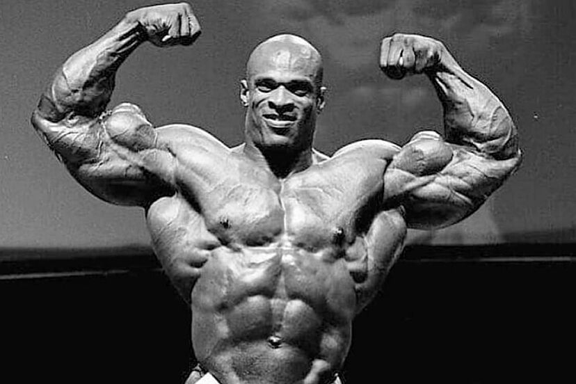
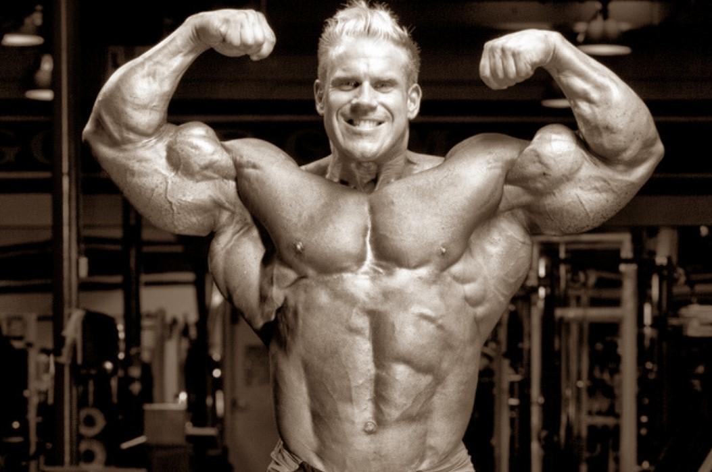
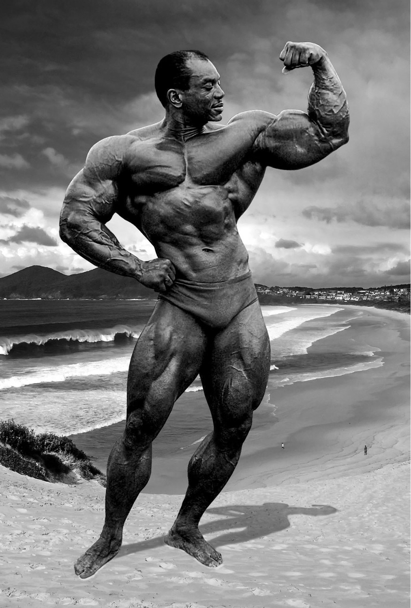

Arnold Schwarzenegger, nacido el 30 de julio de 1947 en Thal, Austria, es una figura icónica en el mundo del fisicoculturismo y el cine. Reconocido como uno de los culturistas más destacados de todos los tiempos, Arnold vio una impresionante carrera tanto en el ámbito del culturismo como en Hollywood. Arnold comenzó su viaje en el culturismo a una edad temprana y ganó su primer título de Mr. Universe a los 20 años. Posteriormente, se convirtió en el hombre más joven en ganar el prestigioso concurso de Mr. Olympia, título que conquistó en siete ocasiones. Su físico imponente, su dedicación y su enfoque implacable en la perfección le valieron el apodo de "El Siete Veces Mr. Olympia".

Ronnie Coleman, nacido el 13 de mayo de 1964 en Bastrop, Luisiana, es reconocido como una leyenda del culturismo. Durante su carrera, Coleman se convirtió en uno de los culturistas más exitosos y dominantes en la historia de este deporte, logrando un récord de ocho victorias consecutivas en el concurso de Mr. Olympia. Coleman comenzó su viaje en el culturismo mientras trabajaba como policía en Texas. A pesar de sus responsabilidades laborales, se dedicó increíblemente a perfeccionar su físico ya competir en el escenario. Su tamaño y masa muscular impresionantes, combinados con su increíble definición y simetría, le valieron el apodo de "La Bestia" y lo concluyeron en una fuerza imparable en los años 90 y principios de los 2000.
Jay Cutler, nacido el 3 de agosto de 1973 en Sterling, Massachusetts, es una figura destacada en el mundo del culturismo. A lo largo de su carrera, Cutler se convirtió en uno de los culturistas más exitosos y respetados, logrando el título de Mr. Olympia en cuatro ocasiones. Cutler comenzó su camino en el culturismo desde una edad temprana y rápidamente mostró un talento excepcional y una dedicación implacable. A lo largo de los años, fue esculpiendo su físico y perfeccionando su técnica de entrenamiento. Su estatura imponente y su increíble desarrollo muscular lo convirtieron en una fuerza dominante en el escenario del culturismo.
Sergio Oliva, conocido como "El Mito", fue un destacado culturista cubano y una figura legendaria en el mundo del culturismo. Nacido el 4 de julio de 1941 en Guanabacoa, Cuba, Oliva se convirtió en una fuerza dominante en la década de 1960 y es considerado uno de los físicos más impresionantes de todos los tiempos. Desde una edad temprana, Oliva mostró una genética excepcional y una predisposición innata para el desarrollo muscular. Su tamaño imponente, su densidad muscular y su asombrosa proporción le valieron el apodo de "El Mito". Oliva tenía una combinación única de tamaño, fuerza y simetría, lo que le permitió destacar en el escenario y dejar una impresión duradera en la comunidad del culturismo.
